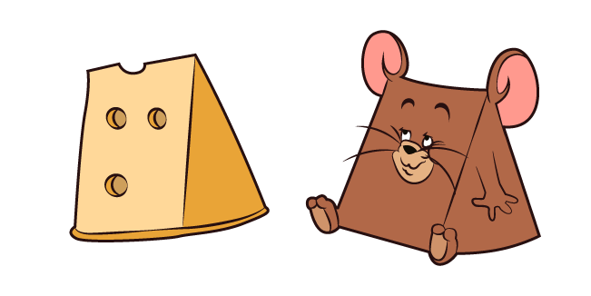
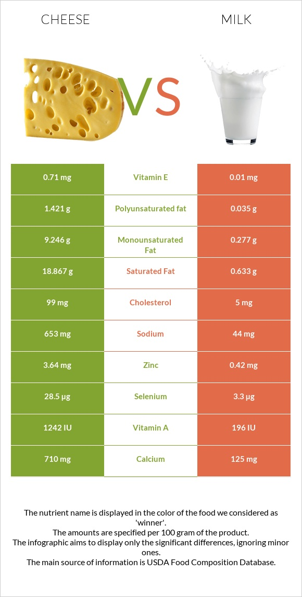

About Cheese
Cheese is a gift from god, it is like milk but better. Cheese could be easy or hard to understand, cheese is simple because its made from milk, but cheese is complex because it is made out of milk.

Cheese is a gift from god, it is like milk but better. Cheese could be easy or hard to understand, cheese is simple because its made from milk, but cheese is complex because it is made out of milk.
Cheese had been mentioned in greek mythology and in other cultures dating back to as 4000+ years. Cheese was originally made by exposing milk in the sun for hours in containers made from stomachs of animals. Cheese was so good and nutritious no wonder why the greeks considered cheese a god.
Step 1: Add the inferior milk into a very big pot, even though milk is inferior to cheese, it is an esstential part of cheese making.
Step 2: Acidify the milk. To get to this step, add the nectar of the gods (Something with high acidity), this will acidify the milk, making it easier and cheesier to turn into cheese.
Step 3: Add holy water into the milk (Coagulant), this will make the proteins in the cheese to bond together, an important step in the practices in cheese making.
Step 4: Wait until the milk has solidified, then cut the curds into pieces.
Step 5: Turn on heat, wait for curds to separate them pour the contents into a strainer.
Step 6: Shape the Cheese into your desired shape (mine is a holy cross)
After all of this you should have a "cheese", but it is still better to go buy cheese from your local market. 
Cheese is better than milk in every way. It has less lactose, which is good for people who can't eat diary, and still has the good nutrients as milk, it can also be aged/stored and stockpiled which can be eaten anytime. 
There is literally no side effects to eating cheese (I think), it has more nutrients than milk and is WAY more versatile.